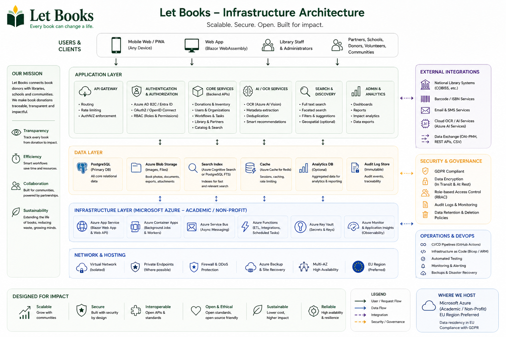

Hosting and governance examples on this page describe intended architecture and policy direction. They do not imply certified deployments, institutional responsibility, or live operational environments.
Guide for administrators
Keep access, privacy, and logistics aligned from the start.
Let Books should be useful for a private donor, a nonprofit, or a future institutional host. Administrators need clear boundaries around users, tenants, roles, storage structure, and optional AI usage.

What administrators manage
- Approved access and memberships
- Tenants and role assignments
- Storage structure and donation workflows
- Privacy boundaries and audit expectations
- Optional AI, OCR, and translation settings
What administrators should avoid
- Granting access based on external login alone
- Publishing exact storage details publicly
- Making paid AI mandatory in core workflows
- Merging physical-copy workflows into pure metadata views
Access model
Authentication can come from external identity providers, but authorization must remain application-managed. A login is not the same thing as permission to view donor data.
Approved logins
Private or early deployments should restrict access to pre-approved users.
Tenant memberships
A user may belong to multiple tenants with different roles and responsibilities.
Role-based visibility
Reviewers should not automatically see donor private notes or exact home details.
Core data concepts that affect operations
- Bibliographic record: metadata about a work or edition
- Physical copy: one real book with condition and location
- Storage hierarchy: room, shelf, box, cabinet, locker, and similar structures
- Donation batch: a group of copies offered together
AI should remain optional
Administrators should be able to disable OCR, translation, and condition assessment globally or per tenant. Paid enrichment should be explicit, cost-aware, and tracked.
Privacy and governance
Let Books is not just a metadata tool. It can reveal a private donor's home storage layout if the system is careless. Governance must reflect that reality.
Default private
Exact storage details, private notes, and donor contact details should remain restricted.
Audit sensitive actions
Exports, imports, role changes, and future AI requests should be logged with accountability in mind.
Separate status from movement
A book moved into a donation box is not automatically delivered. Physical movement and workflow status must remain distinct.
Deployment direction
The platform should work for a single private deployment and still scale toward library or university hosting later. The architecture should stay open to self-hosting, institutional hosting, and provider-agnostic storage.
Operational checklist
- Approve initial users
- Define supported languages
- Create storage locations
- Test export and import with real sample data
- Review privacy boundaries before publishing any feed
Example hosting scenario: A nonprofit runs Let Books for several local donors and partner libraries. One administrator manages approved access, each donor gets a separate tenant, reviewers see only the batches shared with them, and OCR stays disabled until the team is ready to budget for it.